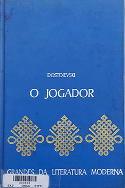

O Jogador - Fedor Dostoiévski
Sobre o livro:
Impressionante retrato psicológico do vício destrutivo do jogo, compulsão que o próprio Dostoiévski conhecia intimamente, O jogador retrata com perfeição a busca incessante por uma lógica que norteie o acaso e a necessidade de controle que acometem todo jogador inveterado. Numa estação de águas na sugestiva cidade alemã de Roletemburgo, Aleksei Ivánovitch, jovem professor de origens humildes, vivencia a emoção do jogo e o infortúnio amoroso enquanto tenta entender as confabulações que definirão o seu destino e o de seus próximos. Num ambiente em que fortunas se dilapidam e o futuro se decide ao sabor da sorte, a tentação do risco e a necessidade imperiosa de experimentar o abismo são o motor deste que continua sendo um dos romances mais perturbadores que o século XIX viu nascer.
Imagens:
Onde Encontrar?
Estante 01, Prateleira 02, Seção D
Código do Livro
528
Outras informações:
- Número de páginas: 190;
- Autor:Fedor Dostoiévski (1821-1881);
- Editora: Editorial Verbo.